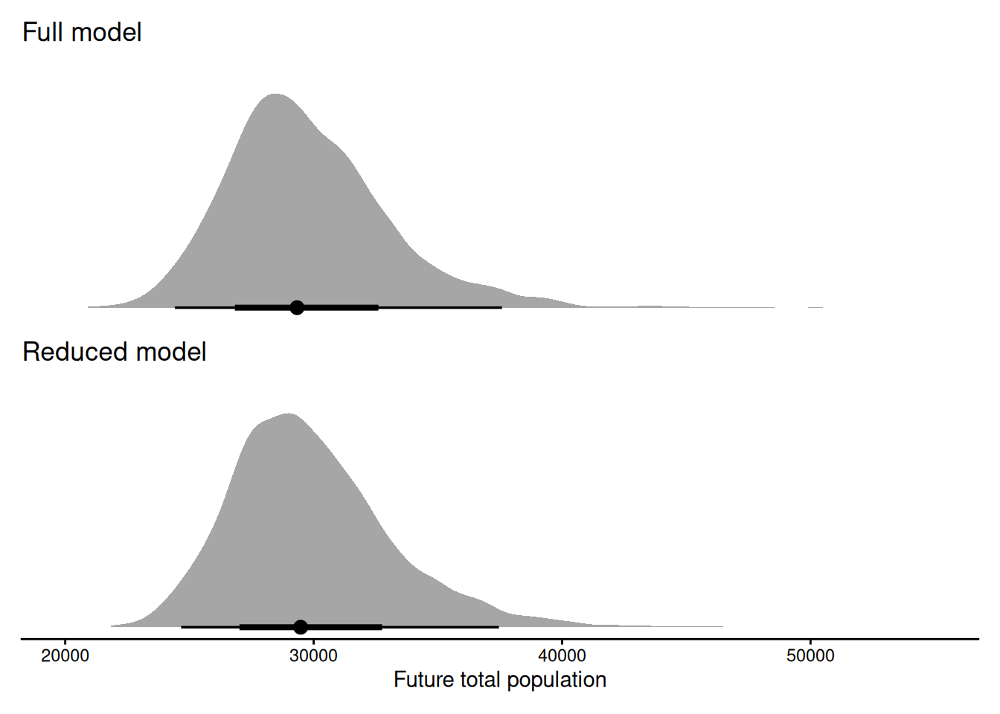

library(sealIPM)
library(tidyverse)
#> ── Attaching core tidyverse packages ──────────────────────── tidyverse 2.0.0 ──
#> ✔ dplyr 1.2.1 ✔ readr 2.2.0
#> ✔ forcats 1.0.1 ✔ stringr 1.6.0
#> ✔ ggplot2 4.0.3 ✔ tibble 3.3.1
#> ✔ lubridate 1.9.5 ✔ tidyr 1.3.2
#> ✔ purrr 1.2.2
#> ── Conflicts ────────────────────────────────────────── tidyverse_conflicts() ──
#> ✖ dplyr::filter() masks stats::filter()
#> ✖ dplyr::lag() masks stats::lag()
#> ℹ Use the conflicted package (<http://conflicted.r-lib.org/>) to force all conflicts to become errors
library(tinytable)
library(priorsense)
library(posterior)
#> This is posterior version 1.7.0
#>
#> Attaching package: 'posterior'
#>
#> The following objects are masked from 'package:stats':
#>
#> mad, sd, var
#>
#> The following objects are masked from 'package:base':
#>
#> %in%, match
library(ggdist)
library(patchwork)Data source importance
The data described in Vanko et al. 2026 is available in the package as grey_seal_data
data(grey_seal_data)The model has the following data sources:
- aerial counts:
aerial - total hunting counts in Sweden:
harvest_bags_finland - total hunting counts in Finland:
harvest_bags_finland - age/sex composition of hunted samples in Sweden:
hunting_comp_sweden - age/sex composition of hunted samples in Finland:
hunting_comp_finland - bycatch composition (combined):
bycatch - pregnancy observations:
pregnancy - reproductive signs:
reproductive_signs
We first fit the model with all the data sources.
fit_full <- fit_ipm(
data = grey_seal_data,
species = "grey",
years = 2005:2010,
iter_warmup = 1000,
iter_sampling = 500,
chains = 10,
seed = 123,
refresh = 0
)Next we check the likelihood sensitivity for each source separately. We focus on the posterior of the population in the final year: population_total_final
sources <- c(
"aerial",
"harvest_bags_finland",
"harvest_bags_sweden",
"hunting_comp_finland",
"hunting_comp_sweden",
"bycatch",
"pregnancy",
"reproductive_signs"
)
source_likelihood_sens <- map(
sources,
~ powerscale_sensitivity(
fit_full$fit,
component = "likelihood",
variable = "population_total_final",
likelihood_selection = .x
) |>
mutate(source = .x)
) |>
list_rbind() |>
select(source, likelihood, -prior, -diagnosis, -variable) |>
arrange(likelihood) |>
rename(Source = source, "Likelihood sensitivity" = likelihood)
source_likelihood_sens |> tt(digits = 1)| Source | Likelihood sensitivity |
|---|---|
| pregnancy | 0.003 |
| harvest_bags_finland | 0.007 |
| harvest_bags_sweden | 0.008 |
| reproductive_signs | 0.015 |
| bycatch | 0.017 |
| hunting_comp_finland | 0.021 |
| hunting_comp_sweden | 0.048 |
| aerial | 0.189 |
Pregnancy signs exhibits much lower likelihood sensitivity than others. Based on this, we fit a reduced model excluding that source.
Next we compare the full and reduced models on their forecasts:
We first specify data to use for forecasting.
We then run the forecast for each of the models.
forecast_full <- forecast_ipm(
fit_full,
future_data = future_data,
species = "grey"
)
#> Running standalone generated quantities after 10 MCMC chains, all chains in parallel ...
#>
#> Chain 1 finished in 0.2 seconds.
#> Chain 2 finished in 0.2 seconds.
#> Chain 3 finished in 0.2 seconds.
#> Chain 4 finished in 0.2 seconds.
#> Chain 5 finished in 0.2 seconds.
#> Chain 6 finished in 0.2 seconds.
#> Chain 9 finished in 0.1 seconds.
#> Chain 7 finished in 0.2 seconds.
#> Chain 8 finished in 0.2 seconds.
#> Chain 10 finished in 0.2 seconds.
#>
#> All 10 chains finished successfully.
#> Mean chain execution time: 0.2 seconds.
#> Total execution time: 0.5 seconds.
no_pregnancy_forecast <- forecast_ipm(
fit_no_pregnancy,
future_data = future_data,
species = "grey"
)
#> Running standalone generated quantities after 10 MCMC chains, all chains in parallel ...
#>
#> Chain 1 finished in 0.2 seconds.
#> Chain 2 finished in 0.2 seconds.
#> Chain 3 finished in 0.2 seconds.
#> Chain 4 finished in 0.3 seconds.
#> Chain 5 finished in 0.2 seconds.
#> Chain 6 finished in 0.2 seconds.
#> Chain 7 finished in 0.2 seconds.
#> Chain 8 finished in 0.2 seconds.
#> Chain 9 finished in 0.2 seconds.
#> Chain 10 finished in 0.2 seconds.
#>
#> All 10 chains finished successfully.
#> Mean chain execution time: 0.2 seconds.
#> Total execution time: 0.6 seconds.And see how the models forecast the future population. Here we can judge whether the difference between the full and reduced models is meaningful, or if we consider dropping the source.
plot_full <- forecast_full$draws("population_total_future", format = "draws_df") |>
ggplot(aes(x = `population_total_future[2]`)) +
stat_halfeye() +
xlim(20000, 55000) +
ggtitle("Full model")
plot_reduced <- no_pregnancy_forecast$draws("population_total_future", format = "draws_df") |>
ggplot(aes(x = `population_total_future[2]`)) +
stat_halfeye() +
xlim(20000, 55000) +
ggtitle("Reduced model")
plot_full / plot_reduced +
plot_layout(axes = "collect") &
theme_classic() &
theme(
axis.text.y = element_blank(),
axis.title.y = element_blank(),
axis.line.y = element_blank(),
axis.ticks.y = element_blank()) &
xlab("Future total population")
#> Warning: Removed 1 row containing missing values or values outside the scale range
#> (`stat_slabinterval()`).